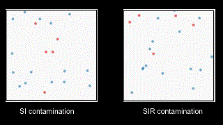
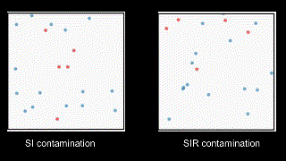

Epidemiology for 5th Grade
Bunch of oversimplified simulations to understand epidemic spread
All of us know the recent condition related to the COVID-19 outbreak. All our social platforms are flooded with various messages related to it. Some are good, some are fake, and some are pretty
confusing and difficult to verify. In the midst of this information spread, I received a post from my
collaborator Sayantari
which was fascinating. We were particularly excited as we have a common interest in the study of
epidemiological dynamics. We readily performed a couple of oversimplified experiments to evaluate the
present situation and the effectiveness of the precautions that we are taking to fight back. Obviously, many can understand the situation
and the effectiveness of the health instructions intuitively, but the visual results of this post might
be useful to explain epidemic spread to a six-year-old kid, or to the people who do not know how the
virus spreads.
Consider there are initially two types of people present in any situation- sick persons and healthy
persons. If a healthy person comes in contact with a sick person, then with some finite probability,
both of them turn into sick persons. In case of highly infectious disease this probability is close to
one that means if a sick person meets a healthy person, the latter will become sick almost surely.
However, a sick person may recover from the disease eventually. Once recovered, that person may or may
not get the infection again. So, we can have different frameworks, like susceptible-infected (SI)
epidemic framework, where an infected person never recovers, susceptible-infected-recovered (SIR)
epidemic framework, where infected person recovers, and never gets infected, or susceptible-infected-
recovered-susceptible (SIRS) epidemic framework where infected person recovers and then again may have
the infection. In a framework where a recovered person may have an infection again is more alarming,
and recent studies are showing a chance that
COVID-19 might attack the same person twice.

Let us define our people! The blue ones and the red ones are the people who are healthy and sick respectively. After some time, we have some pink circles appearing in the left video indicating recovered people (The embedded media are GIF files, so they run in loops). The people in our toy example are moving randomly, and when an infected person meets a healthy person, the latter becomes sick.
Here one must have a 'direct' contact with the infected person to acquire the infection. These models are widely used in epidemiology, and they correctly depict many disease spreads like HIV, herpes etc. The life span of COVID-19 outside the human body is yet debatable, but some studies have shown that it can be active for quite long on different surfaces, and one does not require direct contact to be infected. This no longer allows us to use direct contamination models. Thus, we need to move to a model where a healthy person may become sick if he touches a surface which is infected by some sick person within a time span. We call this 'persistent contamination' as the virus remains active for a longer period.

You may have noticed that above in the left video, the red circles have some moving 'tails'. The tail indicates a part of the previous path a particular infected person has taken which may cause infection. If a healthy person crosses the path, there is a possibility that he may get sick. Even if we consider persistent infection, the change in the result is insignificant here. This is mostly because we have considered less number of people in the experiment. Let us increase the number of people and see what happens.
It can be observed that with a larger number of particles, the persistent infection looks worse. The result is fairly intuitive. Even though everyone should take proper precautions against contamination, people living in high population density areas should be more cautious. As social gatherings increase population density in a place abruptly, the common instruction to avoid social gathering is necessary to follow.
Given these two frameworks, we can further explore the effectiveness of other common strategies to reduce the epidemic spread. The best strategy is obviously to identify each infected person and remove him/her from the population. But detection of each infected person in a very large population requires humongous amount of resources, and is often impossible. So, the government has devised a strategy called 'social distancing' which suggest to keep some minimum distance between two people while interacting. As it is not always possible to maintain the minimum distance with all people, in the analysis we consider that only a few times the minimum distance may reduce to zero.
The results are quite shocking. Though social distancing is a good strategy to follow in case of direct contamination, for persistent contamination, it is not very useful as you can keep a distance from persons but not from unknown infected surfaces. Social distancing reduces your risk of contamination slightly, but mandatory instructions, like washing your hands, not touching your eyes, nose and mouth unnecessarily, are necessary to follow.
We observed that a better strategy is to reduce the movement of each person along with social distancing. Even if you need to go from one place to another place for unavoidable reasons, try to make such trips discrete. Avoid unnecessary movement and keep a minimum social distance. If you are sick, do not wait to be quarantined, self-quarantine yourself. Even if you are not infected, your restricted movement should help you and others.
As shown above, if people move slowly keeping social distances, it reduces infection spread drastically. Both for direct contamination and persistent contamination, this is a good strategy to follow.
Last but not the least, be updated. Though among many false claims and fake sciences, it is difficult to understand real facts, but people are trying hard to fight back. The recent discoveries are changing the outlook to the problem, and depending on the advancements the guidelines may change soon. For examples, some sources are claiming that COVID-19 might be airborne upto some extent. Researchers are working on to come to a conclusion, and we have added just one glimpse to the modified problem dropping further analyses.
In the first two videos above, we have the usual direct contamination and persistent contamination. In the third video, you may observe that once a person is infected, the radius of the circle increase. Now a tail covers more area, and the healthy people have more chance to be infected. The radius of the red circles depends on several factors like the type of the virus, medium, droplet size etc.
Advance details:
We have considered the recovery time to be large. So, in the limited time window, the simulations look like SI model, though the conclusions are consistent for SIR models with a longer run. The death rates in the simulations are intentionally kept zero so that readers do not jump to some misleading conclusions. However, the age-dependent death rate for COVID-19 looks very skewed. Even for a very low mortality rate (some estimated it as 1%), everyone should follow the preventive measures strictly to reduce any unwanted damage to others.
Stay safe and care for others! ~Saumik

Let us define our people! The blue ones and the red ones are the people who are healthy and sick respectively. After some time, we have some pink circles appearing in the left video indicating recovered people (The embedded media are GIF files, so they run in loops). The people in our toy example are moving randomly, and when an infected person meets a healthy person, the latter becomes sick.
Here one must have a 'direct' contact with the infected person to acquire the infection. These models are widely used in epidemiology, and they correctly depict many disease spreads like HIV, herpes etc. The life span of COVID-19 outside the human body is yet debatable, but some studies have shown that it can be active for quite long on different surfaces, and one does not require direct contact to be infected. This no longer allows us to use direct contamination models. Thus, we need to move to a model where a healthy person may become sick if he touches a surface which is infected by some sick person within a time span. We call this 'persistent contamination' as the virus remains active for a longer period.
You may have noticed that above in the left video, the red circles have some moving 'tails'. The tail indicates a part of the previous path a particular infected person has taken which may cause infection. If a healthy person crosses the path, there is a possibility that he may get sick. Even if we consider persistent infection, the change in the result is insignificant here. This is mostly because we have considered less number of people in the experiment. Let us increase the number of people and see what happens.
It can be observed that with a larger number of particles, the persistent infection looks worse. The result is fairly intuitive. Even though everyone should take proper precautions against contamination, people living in high population density areas should be more cautious. As social gatherings increase population density in a place abruptly, the common instruction to avoid social gathering is necessary to follow.
Given these two frameworks, we can further explore the effectiveness of other common strategies to reduce the epidemic spread. The best strategy is obviously to identify each infected person and remove him/her from the population. But detection of each infected person in a very large population requires humongous amount of resources, and is often impossible. So, the government has devised a strategy called 'social distancing' which suggest to keep some minimum distance between two people while interacting. As it is not always possible to maintain the minimum distance with all people, in the analysis we consider that only a few times the minimum distance may reduce to zero.
The results are quite shocking. Though social distancing is a good strategy to follow in case of direct contamination, for persistent contamination, it is not very useful as you can keep a distance from persons but not from unknown infected surfaces. Social distancing reduces your risk of contamination slightly, but mandatory instructions, like washing your hands, not touching your eyes, nose and mouth unnecessarily, are necessary to follow.
We observed that a better strategy is to reduce the movement of each person along with social distancing. Even if you need to go from one place to another place for unavoidable reasons, try to make such trips discrete. Avoid unnecessary movement and keep a minimum social distance. If you are sick, do not wait to be quarantined, self-quarantine yourself. Even if you are not infected, your restricted movement should help you and others.
As shown above, if people move slowly keeping social distances, it reduces infection spread drastically. Both for direct contamination and persistent contamination, this is a good strategy to follow.
Last but not the least, be updated. Though among many false claims and fake sciences, it is difficult to understand real facts, but people are trying hard to fight back. The recent discoveries are changing the outlook to the problem, and depending on the advancements the guidelines may change soon. For examples, some sources are claiming that COVID-19 might be airborne upto some extent. Researchers are working on to come to a conclusion, and we have added just one glimpse to the modified problem dropping further analyses.
In the first two videos above, we have the usual direct contamination and persistent contamination. In the third video, you may observe that once a person is infected, the radius of the circle increase. Now a tail covers more area, and the healthy people have more chance to be infected. The radius of the red circles depends on several factors like the type of the virus, medium, droplet size etc.
Advance details:
We have considered the recovery time to be large. So, in the limited time window, the simulations look like SI model, though the conclusions are consistent for SIR models with a longer run. The death rates in the simulations are intentionally kept zero so that readers do not jump to some misleading conclusions. However, the age-dependent death rate for COVID-19 looks very skewed. Even for a very low mortality rate (some estimated it as 1%), everyone should follow the preventive measures strictly to reduce any unwanted damage to others.
Stay safe and care for others! ~Saumik